Zonbestemmingen
Zonvakantie
Hier heb ik voor jullie wat verschillende bestemmingen uitgezocht in het buitenland, waar je naartoe zou kunnen gaan als je zin hebt in een zonvakantie.
Dit is de site google
Spanje
Malaga
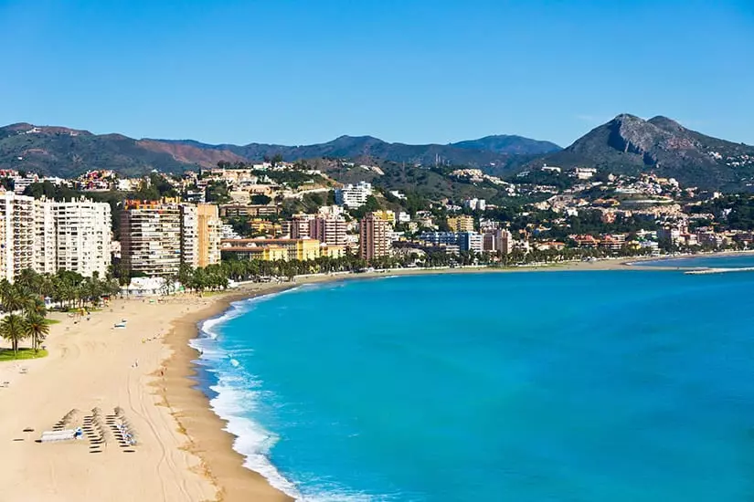
Málaga is een gemeente en de op een na grootste stad van Andalusië.
Málaga wordt omgeven door bergen, de zogenoemde Heuvels van Axarquía en wordt doorkruist door twee rivieren, de Guadalmedina en de Guadalhorce.
Leuke dingen om te doen in Malaga zijn:
- De kathedraal van Malaga, deze kathedraal is van alle kanten in de stad zichtbaar. Het is een gebouw met verschillende bouwstijlen en een toren die nooit is afgemaakt.
- Het Alcazaba van Malaga, het is een Moorse fort in het oude centrum van de stad.
- Winkelcentrum van Malaga, calle Marques de Larios. Is de winkelstraat van malaga. Al kom je niet voor het winkelen dan is dit een must see
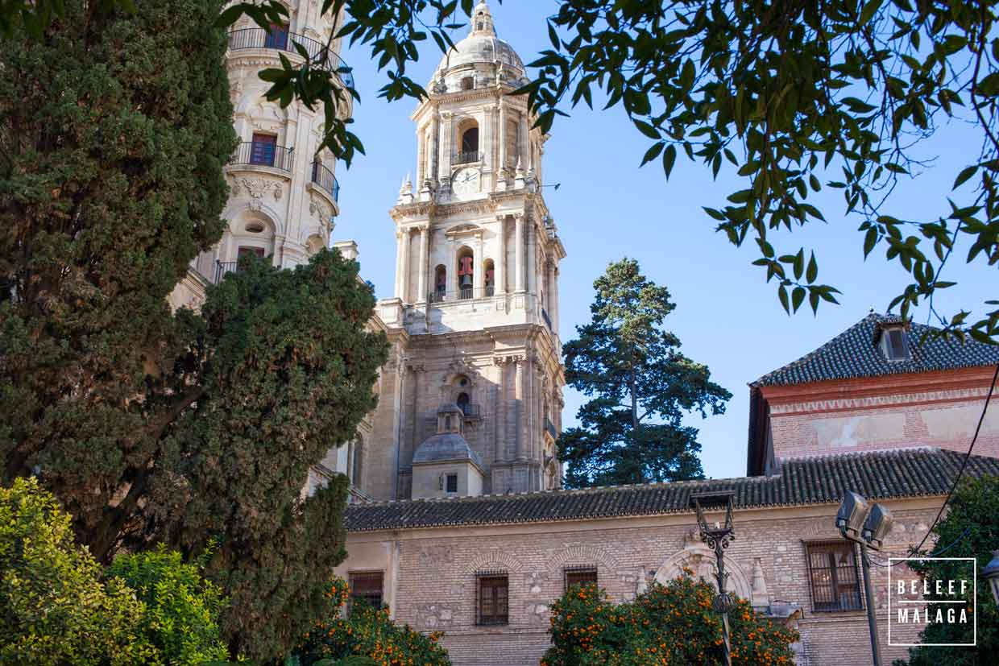
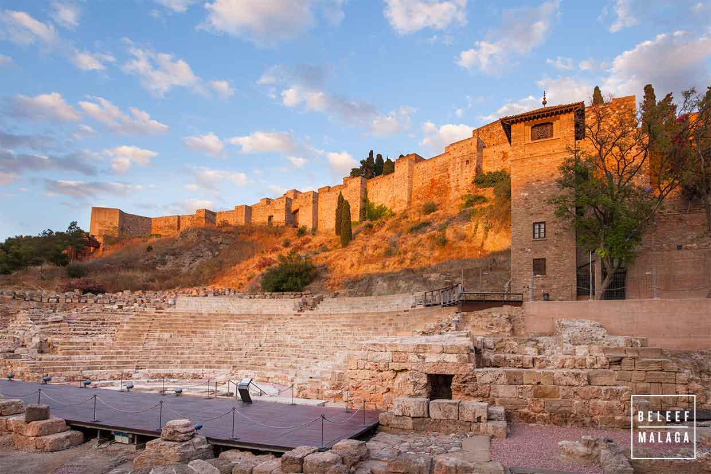
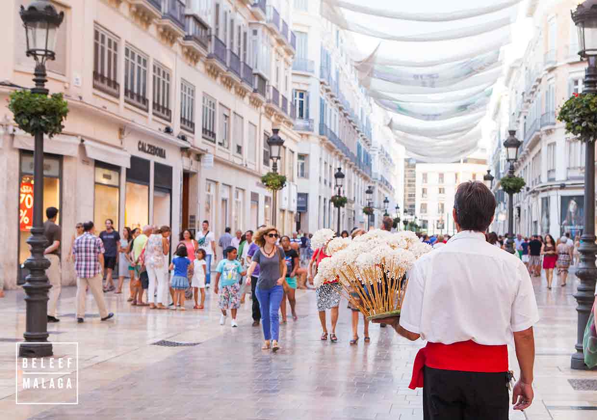
Griekenland
Zakynthos
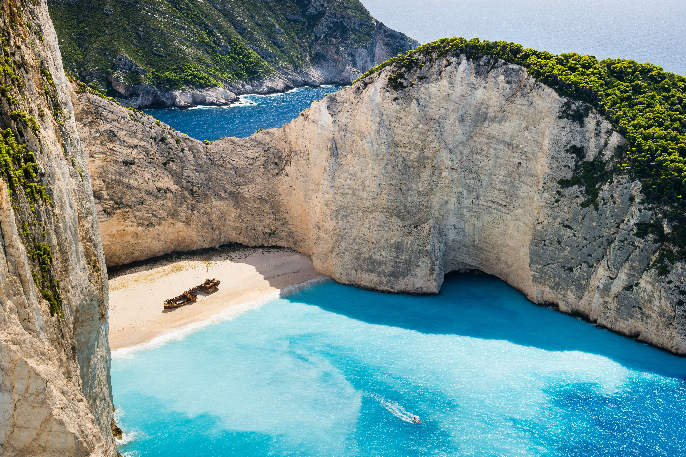
Zakynthos, is een Grieks eiland, ook bekend onder de (eigenlijk Italiaanse) naam Zante of Zacinto.Het eiland Zakynthos ligt ten westen van het vasteland van Griekenland, ongeveer op gelijke hoogte met Sicilië.
Leuke dingen om te doen op het eiland Zakynthos zijn:
- Tijdens je trip op Zakynthos is het heerlijk om een dagje met de boot weg te gaan. Deze kan je in de buurt huren en dan kan je naar het scheepswrak varen.
- Lekker door Zakynthos stad struinen, lekker door de straten met restaurantjes struinen wanneer dit s'avonds lekker tot leven komt.
- Een wijnproeverij, ook op zakynthos heb je veel verschillende wijngaarden zoals Callinico Winery of Grampsas.
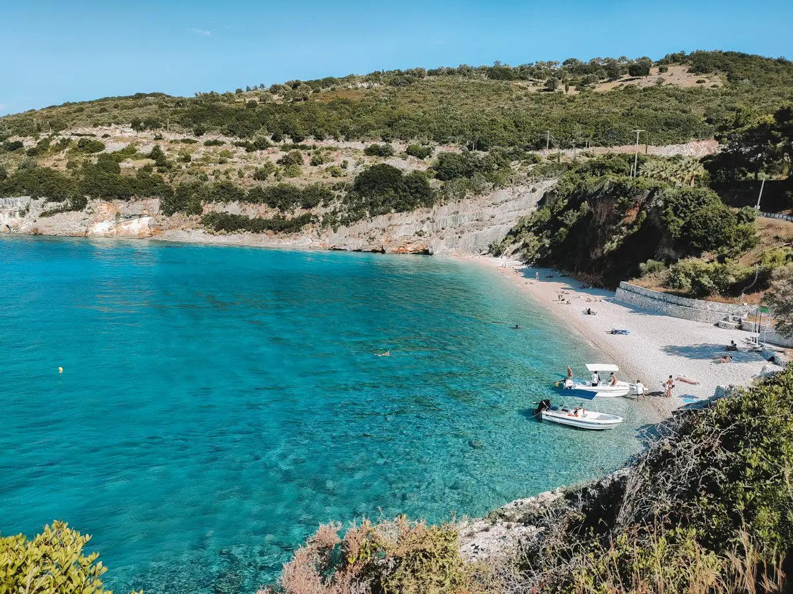
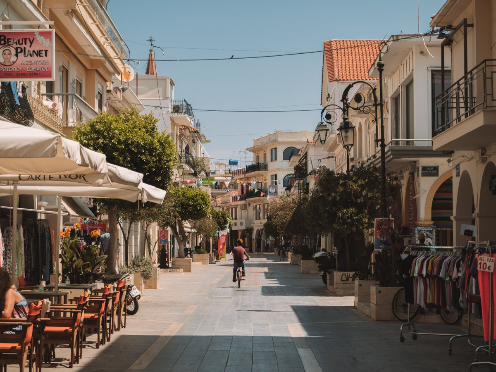
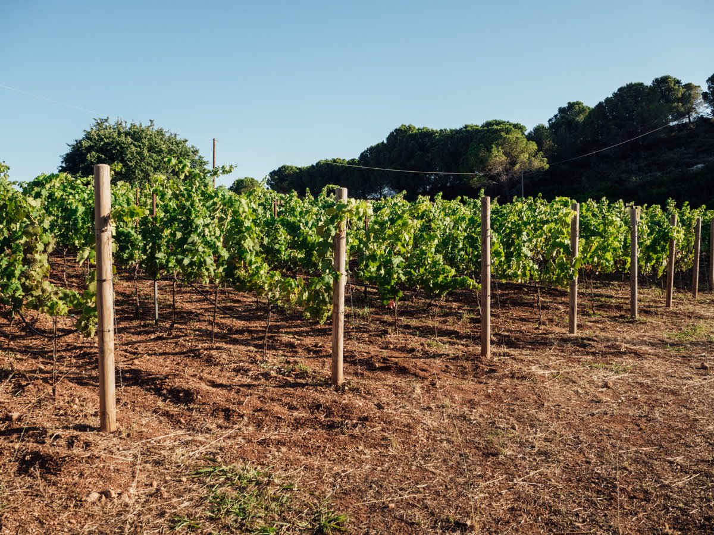
Kroatie
Dubrovnik
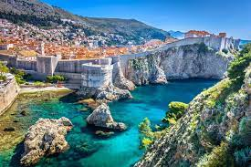
Dubrovnik is een havenstad in Dalmatie een regio in Kroatie en is gelegen onder de berg Srd. De stad wordt als een van de mooiste steden van de Adrastische kust beschouwd en wordt dan ook wel 'parel van de Adrastische zee' genoemd.
Leuke dingen om te doen in Dubrovnik zijn:
- Een wandeling maken door de oude sta, Dubrovnik is een van de weinige steden die nog volledig ommuurd is. Dus je kan er helemaal omheen lopen.
- Maak een uitsapje naar Rectors place, dit is een mooi paleis in de oude stad en heeft ook nog gediend als decor voor de game of thrones.
- Op een kwartiertje van de haven ligt het eiland Lokrum, dit eiland is groen en er lopen veel pauwen rond.
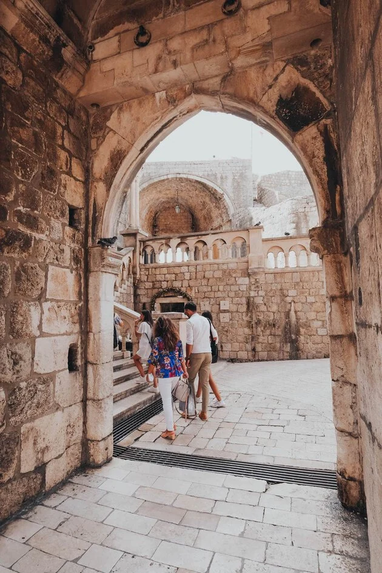
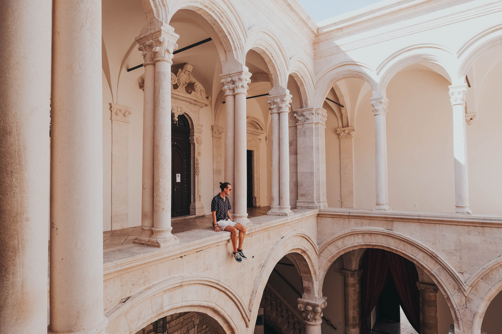
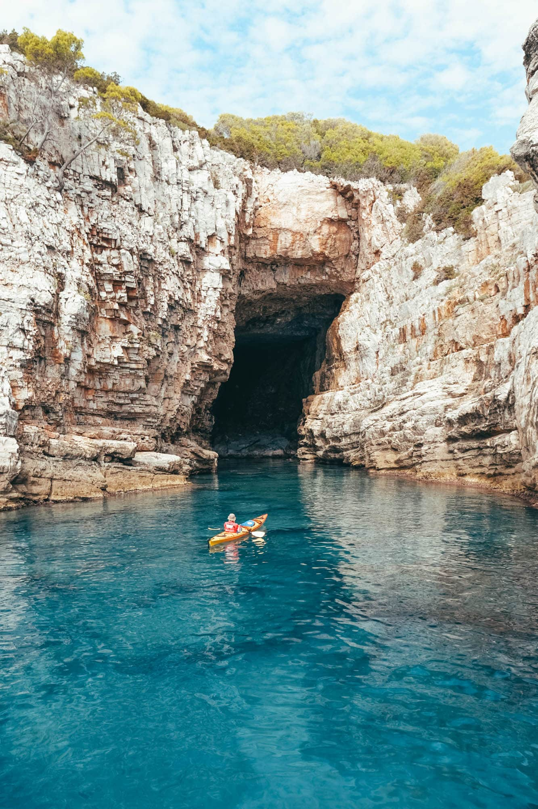